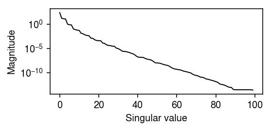
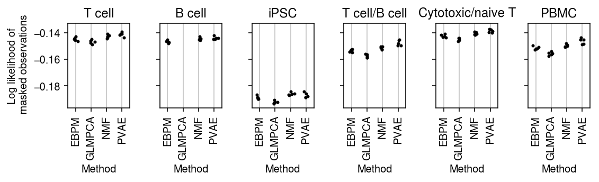
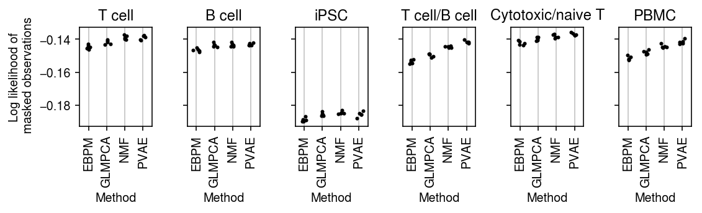
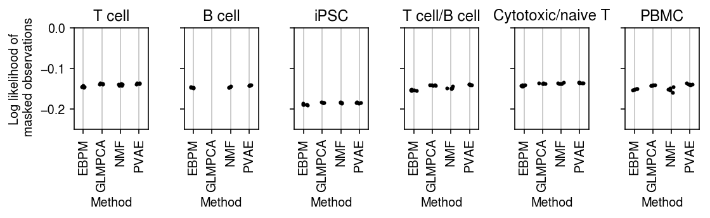
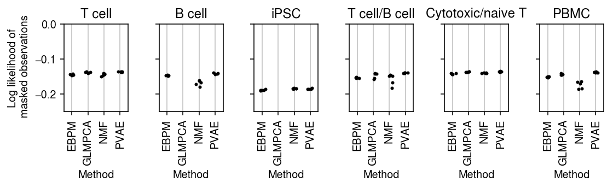
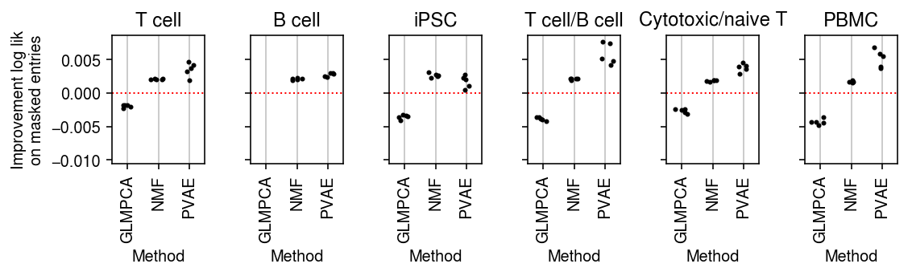
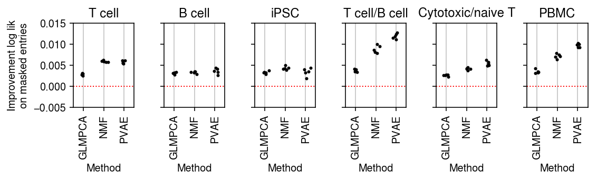
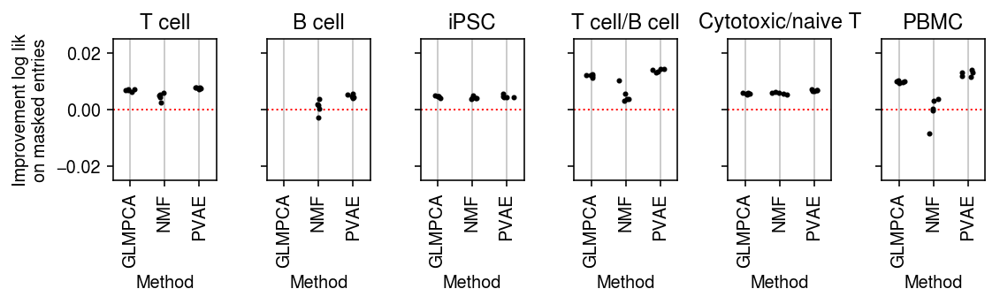
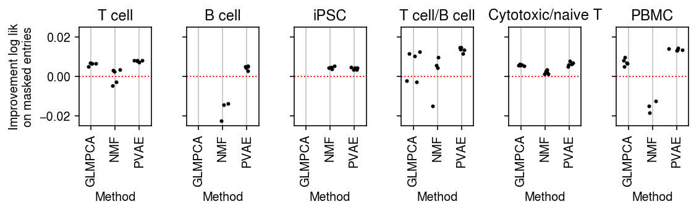

Imputation of count matrices
Table of Contents
Introduction
The key idea of our approach to modeling scRNA-seq is to separate sampling variation and expression variation. This approach leads to the following multi-gene model for scRNA-seq data: \( \newcommand\const{\mathrm{const}} \newcommand\E[1]{\left\langle #1 \right\rangle} \newcommand\vx{\mathbf{x}} \newcommand\vw{\mathbf{w}} \newcommand\vz{\mathbf{z}} \newcommand\mx{\mathbf{X}} \newcommand\mU{\mathbf{U}} \newcommand\mw{\mathbf{W}} \newcommand\mz{\mathbf{Z}} \newcommand\ml{\mathbf{L}} \newcommand\mf{\mathbf{F}} \)
\begin{align*} x_{ij} &\sim \operatorname{Poisson}(\lambda_{ij})\\ \lambda_{ij} &= h^{-1}((\ml\mf')_{ij}) \end{align*}where \(i = 1, \ldots, n\), \(j = 1, \ldots, p\), \(\ml\) is an \(n \times K\) matrix, and \(\mf\) is a \(p \times K\) matrix. (Here, we absorb the size factor into \(\ml\).) We previously used Poisson thinning of real data sets to benchmark methods which fit this model. The key idea of this approach is that binomial sampling results in two data matrices which have the same \(\lambda_{ij}\), and this works even without knowing the ground truth \(\lambda_{ij}\). However, it is natural to further assume that expression variation itself can be partitioned into structured and unstructured variation, e.g.
\begin{align*} x_{ij} &\sim \operatorname{Poisson}(\lambda_{ij})\\ \lambda_{ij} &= \mu_{ij} u_{ij}\\ \mu_{ij} &= h^{-1}((\ml\mf')_{ij})\\ u_{ij} &\sim \operatorname{Gamma}(1/\phi, 1/\phi) \end{align*}Remark This formulation suggests against making a point-Gamma assumption on \(\lambda_{ij}\), because the implicit assumption on multiplicative random effect \(u_{ij}\) is that it does not have mean 1.
We cannot use Poisson thinning to evaluate methods on fitting this model, because the evaluation requires the ground truth \(\mu_{ij}\). Here, we study the problem of masking data entries in an scRNA-seq count matrix and imputing them by estimating \(\mu_{ij}\). Critically, this masking cannot be achieved simply by setting some entries to zero, because zero is a valid non-missing observation in scRNA-seq data. Instead, we require methods which can handle missing data, e.g., having associated weights. The key idea which enables fast methods for our Poisson model of interest is that the likelihood factorizes, so we can maximize the incomplete data log likelihood (or a lower bound) without marginalizing over unobserved data.
Setup
import numpy as np import pandas as pd import scipy.stats as st import scmodes
%matplotlib inline %config InlineBackend.figure_formats = set(['retina'])
import matplotlib.pyplot as plt plt.rcParams['figure.facecolor'] = 'w' plt.rcParams['font.family'] = 'Nimbus Sans'
Methods
Weighted non-negative matrix factorization
Weighted non-negative matrix factorization (WNMF; Zhang et al. 2006, Khanagal et al. 2010) is an extension of NMF (Lee & Seung 2001) to handle incomplete data associated with weights \(w_{ij} \in \{0, 1\}\). In our model of interest, the classical multiplicative updates are in fact EM updates of an augmented model (Cemgil 2009)
\begin{align*} x_{ij} &= \sum_k z_{ijk}\\ z_{ijk} &\sim \operatorname{Poisson}(l_{ik} f_{jk}) \end{align*}and we can derive how the updates should change for incomplete data. The log posterior
\begin{align*} \ln p(\mz \mid \mx, \mw, \ml, \mf) &= \ln p(\mx, \mz \mid \ml, \mf, \mw) - \ln p(\mx \mid \ml, \mf, \mw)\\ &= \sum_{i,j,k} w_{ij} \left[z_{ijk} \ln (l_{ik}f_{jk}) - l_{ik} f_{jk} + \ln\Gamma(z_{ijk} + 1)\right] - \sum_{i,j,k} w_{ij} \left[x_{ij} \ln\left(\sum_k l_{ik}f_{jk}\right) - \sum_k l_{ik} f_{jk} + \ln\Gamma(x_{ij} + 1)\right]\\ &= \sum_{i, j, k} \left[w_{ij} z_{ijk} \ln\left(\frac{l_{ik}{f_{jk}}}{\sum_t l_{it} f_{jt}}\right)\right] + \const\\ &= \sum_{i, j} w_{ij} \operatorname{Multinomial}(\cdot; x_{ij}, \frac{l_{i1} f_{j1}}{\sum_t l_{it} f_{jt}}, \ldots, \frac{l_{iK} f_{jK}}{\sum_t l_{it} f_{jt}}) \end{align*}Therefore
\[ \E{z_{ijk}} = x_{ij} \frac{l_{ik} f_{jk}}{\sum_t l_{it} f_{jt}} \]
when \(w_{ij} = 1\), and is missing otherwise. The expected log joint
\[ \E{\ln p(\mx, \mz \mid \ml, \mf, \mw)} = \sum_{i, j, k} w_{ij} [\E{z_{ijk}} \ln(l_{ij} f_{jk}) - l_{ik} f_{jk}] + \const \]
yielding M step updates
\begin{align*} l_{ik} &:= \frac{\sum_j w_{ij} \E{z_{ijk}}}{\sum_j w_{ij} f_{jk}}\\ f_{jk} &:= \frac{\sum_i w_{ij} \E{z_{ijk}}}{\sum_i w_{ij} l_{ik}} \end{align*}Plugging in \(\E{z_{ijk}}\) yields the classical multiplicative updates, modified by introducing the weights in the numerator and denominator.
Weighted Negative Binomial Matrix Factorization
Negative Binomial Matrix Factorization (NBMF; Gouvert et al 2018) is the (augmented) model
\begin{align*} x_{ij} &= \sum_{k=1}^K z_{ijk}\\ z_{ijk} &\sim \operatorname{Poisson}(l_{ik} f_{jk} u_{ij})\\ u_{ij} &\sim \operatorname{Gamma}(1/\phi_{ij}, 1/\phi_{ij}) \end{align*}where the Gamma distribution is parameterized by a shape and a rate. (The mean of the Gamma distribution is 1, and its variance is \(\phi_{ij}\).) Gouvert et al. 2018 only consider the case \(\phi_{ij} = \phi\); however, other natural choices are \(\phi_{ij} = \phi_j\) and \(\phi_{ij} = \phi_i \phi_j\). To derive an EM algorithm, first note that
\[ p(\mz \mid \mx, \mU, \ml, \mf) = p(\mz \mid \mx, \ml, \mf) = \sum_{i, j} \operatorname{Multinomial}(\cdot; x_{ij}, \frac{l_{i1} f_{j1}}{\mu_{ij}}, \ldots, \frac{l_{iK} f_{jK}}{\mu_{ij}}) \]
where \(\mu_{ij} \triangleq \sum_t l_{it} f_{jt}\). Further,
\begin{align*} p(u_{ij} \mid \mx, \mz, \ml, \mf) &\propto p(\mx, \mz, u_{ij} \mid \ml, \mf)\\ &\propto \prod_k u_{ij}^{z_{ijk}} \exp(-l_{ik} f_{jk} u_{ij}) u_{ij}^{1/\phi_{ij} - 1} \exp(-u_{ij} / \phi_{ij})\\ &\propto u_{ij}^{x_{ij} + 1 / \phi_{ij} - 1} \exp\left(-u_{ij}\left(\mu_{ij} + 1 / \phi_{ij}\right)\right)\\ &= \operatorname{Gamma}(x_{ij} + 1 / \phi_{ij}, \mu_{ij} + 1 / \phi_{ij}) \end{align*}The expected log joint
\begin{multline*} \ell \triangleq \E{\ln p(\mx, \mz, \mU \mid \ml, \mf)} = \sum_{i, j, k} [\E{z_{ijk}}(\E{\ln u_{ij}} + \ln (l_{ik} f_{jk})) - l_{ik} f_{jk} \E{u_{ij}} - \ln\Gamma(x_{ij} + 1)]\\ + \sum_{i, j} [(1 / \phi_{ij}) \ln(1 / \phi_{ij}) + (1 / \phi_{ij} - 1) \E{\ln u_{ij}} - \E{u_{ij}} / \phi_{ij} - \ln\Gamma(1 / \phi_{ij})] \end{multline*}yielding analytic M step updates
\begin{align*} l_{ik} &= \frac{\sum_j \E{z_{ijk}}}{\sum_j f_{jk} \E{u_{ij}}}\\ f_{jk} &= \frac{\sum_i \E{z_{ijk}}}{\sum_i l_{ik} \E{u_{ij}}} \end{align*}Using properties of the Gamma distribution,
\begin{align*} \E{u_{ij}} &= \frac{x_{ij} + 1/\phi_{ij}}{\mu_{ij} + 1/\phi_{ij}}\\ \E{\ln u_{ij}} &= \psi(x_{ij} + 1 / \phi_{ij}) - \ln(\mu_{ij} + 1 / \phi_{ij}) \end{align*}Plugging in \(\E{z_{ijk}}\), \(\E{u_{ij}}\) yields multiplicative updates of a form similar to WNMF. Following the arguments for WNMF, if we introduce weights \(w_{ij} \in \{0, 1\}\), they will enter the M step updates in the numerator and denominator.
Gouvert et al. 2018 treat \(\phi_{ij}\) as fixed, rather than estimating it from data. For the easy case \(\phi_{ij} = \phi\), numerical optimization of the expected log joint with respect to \(\theta = 1 / \phi\) is straightforward (using e.g. Newton's method):
\begin{align*} \frac{\partial \ell}{\partial \theta} &= \sum_{i, j} \Bigg[1 + \ln \theta + \E{\ln u_{ij}} - \E{u_{ij}} - \psi(\theta)\Bigg]\\ \frac{\partial^2 \ell}{\partial \theta^2} &= \sum_{i, j} \Bigg[\frac{1}{\theta} - \psi_1(\theta)\Bigg] \end{align*}where \(\psi(\cdot)\) denotes the digamma function and \(\psi_1(\cdot)\) denotes the trigamma function. It is clear that weights \(w_{ij} \in \{0, 1\}\) enter inside the sums in these expressions.
Weighted GLM-PCA
GLM-PCA (Townes 2019) uses Fisher scoring to fit the model assuming \(h = \log\). The weighted version of the problem is
\begin{align*} \ell \triangleq \ln p(\mx \mid \ml, \mf, \mw) &= \sum_{i, j} w_{ij} \left[x_{ij} \sum_k l_{ik} f_{jk} - \exp\left(\sum_t l_{it} f_{jt}\right) \right] + \const\\ \frac{\partial \ell}{\partial l_{ik}} &= \sum_j w_{ij} \left[x_{ij} f_{jk} - \exp\left(\sum_t l_{it} f_{jt}\right) f_{jk}\right]\\ \frac{\partial \ell}{\partial f_{jk}} &= \sum_i w_{ij} \left[x_{ij} l_{ik} - \exp\left(\sum_t l_{it} f_{jt}\right) l_{ik}\right]\\ \mathcal{I}(l_{ik}) &= \sum_j w_{ij} \exp\left(\sum_t l_{it} f_{jt}\right) f_{jk}^2\\ \mathcal{I}(f_{jk}) &= \sum_i w_{ij} \exp\left(\sum_t l_{it} f_{jt}\right) l_{ik}^2 \end{align*}Incomplete data VAE
Variational autoencoders fit a generative model parameterized by a neural network (Kingma and Welling 2014, Rezende and Mohammed 2014). Our model of interest is
\begin{align*} x_{ij} \mid \lambda_{ij} &\sim \operatorname{Poisson}(\lambda_{ij})\\ \lambda_{ij} \mid \vz_i, u_{ij} &= \mu(\vz_i)_j\, u_{ij}\\ u_{ij} &\sim p(u_{ij})\\ \vz_i &\sim \mathcal{N}(\boldsymbol{0}, \mathbf{I}_K) \end{align*}where \(\mu(\cdot)\) is a \(p\)-dimensional output of a fully connected feed-forward neural network. To approximate the intractable posterior \(p(\vz_i \mid \vx_i)\), we use a variational approximation
\[ q(\vz_i \mid \vx_i) = \mathcal{N}(m(\vz_i), \operatorname{diag}(S(\vz_i))) \]
where \(m(\cdot), S(\cdot)\) are \(K\)-dimensional outputs of a FF network. Fitting VAEs with incomplete data has only recently been studied (Nazabal et al. 2018, Mattei and Frellsen 2018). The key idea is that if the coordinates of \(\vx_i\) are separable (meaning the likelihood factorizes) and coordinates are missing at random, then maximizing the log likelihood (or a lower bound to the log likelihood) of only the observed coordinates is a statistically sound procedure. In this case, the lower bound is
\[ \ell \triangleq \sum_{i, j} \E{w_{ij} \ln\left(\int_0^\infty \operatorname{Poisson}(x_{ij}; \mu(\vz_i)_j\, u_{ij})\; dp(u_{ij})\right)} - \sum_{i} \E{\ln\left(\frac{q(\vz_i \mid f(\vx_i))}{p(\vz_i)}\right)}\]
where \(f\) is some imputation function (e.g., fill in missing values with zero) and expectations are taken with respect to \(q\). For easy choices of \(p(u_{ij})\), the integrals inside the expectation are analytic. Mattei and Frellsen 2018 suggest filling missing data with 0 in the encoder network works, and that a tighter bound can be achieved using importance sampling (Burda et al. 2016)
\[ \ell_{\text{IWAE}} \triangleq \sum_i \E{\ln\left(\frac{1}{S} \sum_{s=1}^S \frac{p(\vx_i, \vz_i^{(s)})}{q(\vz_i^{(s)} \mid \vx_i)}\right)} \]
Datasets
Follow the data processing for the Poisson thinning analysis.
Results
Simulated examples
Simulate some data where \([\lambda_{ij}]\) is rank 3.
np.random.seed(0) n = 100 p = 500 k = 3 l = np.random.lognormal(sigma=.5, size=(n, k)) f = np.random.lognormal(sigma=.5, size=(p, k)) lam = l.dot(f.T) x = np.random.poisson(lam=lam)
Get the oracle rank of \([\ln \lambda_{ij}]\).
d = np.linalg.svd(np.log(lam))[1]
plt.clf() plt.gcf().set_size_inches(4, 2) plt.yscale('log') plt.plot(np.arange(n), d, lw=1, c='k') plt.xlabel('Singular value') plt.ylabel('Magnitude') plt.tight_layout()

np.where(d <= 1e-4)[0].min()
24
Mask 10% of entries at random. For each choice of rank, evaluate the imputation loss of different methods.
imputation_res = [] for rank in range(1, 5): for method in ('ebpm_point', 'nmf', 'glmpca', 'nbmf'): print(f'Fitting {method} (rank {rank})') loss = getattr(scmodes.benchmark, f'imputation_score_{method}')(x, rank=rank, frac=0.1, tol=5e-3, inv_disp=10000, seed=0) imputation_res.append([method, rank, loss]) imputation_res = pd.DataFrame(imputation_res, columns=['method', 'rank', 'loss'])
Plot the results.
cm = plt.get_cmap('Dark2') plt.clf() plt.gcf().set_size_inches(4, 2) for i, (k, g) in enumerate(imputation_res.groupby('method')): plt.plot(g['rank'], g['loss'], lw=1, marker=None, c=cm(i), label=k.upper()) plt.axvline(x=3, lw=1, ls=':', c='k') plt.legend(frameon=False, loc='center left', bbox_to_anchor=(1, .5)) plt.xticks(np.arange(1, 5), np.arange(1, 5)) plt.xlabel('Assumed rank') plt.ylabel('Poisson loss') plt.tight_layout()
Repeat the analysis for noisy data.
np.random.seed(0) n = 100 p = 500 k = 3 l = np.random.lognormal(sigma=.5, size=(n, k)) f = np.random.lognormal(sigma=.5, size=(p, k)) lam = l.dot(f.T) inv_disp = 10 u = np.random.gamma(shape=inv_disp, scale=1 / inv_disp, size=(n, p)) x = np.random.poisson(lam=lam * u)
imputation_res = [] for rank in range(1, 5): for method in ('ebpm_point', 'nmf', 'glmpca', 'nbmf'): print(f'Fitting {method} (rank {rank})') loss = getattr(scmodes.benchmark, f'imputation_score_{method}')(x, rank=rank, frac=0.1, tol=5e-3, inv_disp=10, seed=0) imputation_res.append([method, rank, loss]) imputation_res = pd.DataFrame(imputation_res, columns=['method', 'rank', 'loss'])
Plot the results.
cm = plt.get_cmap('Dark2') plt.clf() plt.gcf().set_size_inches(4, 2) for i, (k, g) in enumerate(imputation_res.groupby('method')): plt.plot(g['rank'], g['loss'], lw=1, marker=None, c=cm(i), label=k.upper()) plt.axvline(x=3, lw=1, ls=':', c='k') plt.legend(frameon=False, loc='center left', bbox_to_anchor=(1, .5)) plt.xticks(np.arange(1, 5), np.arange(1, 5)) plt.xlabel('Assumed rank') plt.ylabel('Poisson loss') plt.tight_layout()

Imputation benchmark
Run the CPU methods.
sbatch --partition=broadwl -n1 --mem=8G --time=12:00:00 --job-name=imputation -a 20 #!/bin/bash source activate scmodes python <<EOF <<imports>> import os import sys <<data>> methods = ['ebpm_point', 'nmf', 'glmpca'] ranks = [1, 2, 4, 8] tasks = [(d, m, r) for d in data for m in methods for r in ranks] d, m, r = tasks[int(os.environ['SLURM_ARRAY_TASK_ID'])] x = data[d]() res = scmodes.benchmark.evaluate_imputation(x.values, methods=[m], rank=r, tol=1e-2, n_trials=5) res.to_csv(f'/scratch/midway2/aksarkar/modes/imputation/{d}-{m}-{r}.txt.gz', compression='gzip', sep='\t') EOF
Run the GPU methods.
sbatch --partition=gpu2 --gres=gpu:1 --mem=16G --time=60:00 --job-name=imputation -a 0-23 #!/bin/bash source activate scmodes python <<EOF <<imports>> import os <<data>> methods = ['pvae'] ranks = [1, 2, 4, 8] tasks = [(d, m, r) for d in data for m in methods for r in ranks] d, m, r = tasks[int(os.environ['SLURM_ARRAY_TASK_ID'])] x = data[d]() res = scmodes.benchmark.evaluate_imputation(x.values, methods=[m], rank=r, n_trials=5) res.to_csv(f'/scratch/midway2/aksarkar/modes/imputation/{d}-{m}-{r}.txt.gz', compression='gzip', sep='\t') EOF
Collect the results.
import os.path methods = ['ebpm_point', 'nmf', 'glmpca', 'pvae'] ranks = [1, 2, 4, 8] imputation_res = (pd.concat({(d, m, r): pd.read_csv(f'/scratch/midway2/aksarkar/modes/imputation/{d}-{m}-{r}.txt.gz', sep='\t', index_col=0) for d in data for m in methods for r in ranks if os.path.exists(f'/scratch/midway2/aksarkar/modes/imputation/{d}-{m}-{r}.txt.gz')}) .reset_index(level=[1, 3], drop=True) .reset_index() .rename({'level_0': 'data', 'level_1': 'rank'}, axis=1) ) imputation_res.to_csv('/project2/mstephens/aksarkar/projects/singlecell-modes/data/imputation/imputation.txt.gz', sep='\t')
Read the results.
imputation_res = pd.read_csv('/project2/mstephens/aksarkar/projects/singlecell-modes/data/imputation/imputation.txt.gz', sep='\t', index_col=0)
Plot the results.
methods = ['ebpm_point', 'glmpca', 'nmf', 'pvae'] labels = ['EBPM', 'GLMPCA', 'NMF', 'PVAE'] titles = ['T cell', 'B cell', 'iPSC', 'T cell/B cell', 'Cytotoxic/naive T', 'PBMC']
plt.clf() fig, ax = plt.subplots(1, len(data), sharey=True) fig.set_size_inches(8, 2.5) for a, d, t in zip(ax, data, titles): g = imputation_res[np.logical_and(imputation_res['data'] == d, imputation_res['rank'] == 1)] for x, (m, k) in enumerate(zip(methods, labels)): y = g.loc[g['method'] == m] a.scatter(x + np.random.normal(size=y.shape[0], scale=0.1), -y['loss'], s=4, c='k', zorder=4) a.set_title(t) a.grid(c='0.8', lw=1, axis='x') a.set_xticks(np.arange(4)) a.set_xticklabels(labels, rotation=90) a.set_xlim(-.5, 3.5) a.set_xlabel('Method') ax[0].set_ylabel('Log likelihood of\n masked observations') fig.tight_layout()

plt.clf() fig, ax = plt.subplots(1, len(data), sharey=True) fig.set_size_inches(8, 2.5) for a, d, t in zip(ax, data, titles): g = imputation_res[np.logical_and(imputation_res['data'] == d, imputation_res['rank'] == 2)] for x, (m, k) in enumerate(zip(methods, labels)): y = g.loc[g['method'] == m] a.scatter(x + np.random.normal(size=y.shape[0], scale=0.1), -y['loss'], s=4, c='k', zorder=4) a.set_title(t) a.grid(c='0.8', lw=1, axis='x') a.set_xticks(np.arange(4)) a.set_xticklabels(labels, rotation=90) a.set_xlim(-.5, 3.5) a.set_xlabel('Method') ax[0].set_ylabel('Log likelihood of\n masked observations') fig.tight_layout()

plt.clf() fig, ax = plt.subplots(1, len(data), sharey=True) fig.set_size_inches(8, 2.5) for a, d, t in zip(ax, data, titles): g = imputation_res[np.logical_and(imputation_res['data'] == d, imputation_res['rank'] == 4)] for x, (m, k) in enumerate(zip(methods, labels)): y = g.loc[g['method'] == m] a.scatter(x + np.random.normal(size=y.shape[0], scale=0.1), -y['loss'], s=4, c='k', zorder=4) a.set_title(t) a.grid(c='0.8', lw=1, axis='x') a.set_xticks(np.arange(4)) a.set_xticklabels(labels, rotation=90) a.set_xlim(-.5, 3.5) a.set_ylim(-.25, 0) a.set_xlabel('Method') ax[0].set_ylabel('Log likelihood of\n masked observations') fig.tight_layout()

plt.clf() fig, ax = plt.subplots(1, len(data), sharey=True) fig.set_size_inches(8, 2.5) for a, d, t in zip(ax, data, titles): g = imputation_res[np.logical_and(imputation_res['data'] == d, imputation_res['rank'] == 8)] for x, (m, k) in enumerate(zip(methods, labels)): y = g.loc[g['method'] == m] a.scatter(x + np.random.normal(size=y.shape[0], scale=0.1), -y['loss'], s=4, c='k', zorder=4) a.set_title(t) a.grid(c='0.8', lw=1, axis='x') a.set_xticks(np.arange(4)) a.set_xticklabels(labels, rotation=90) a.set_xlim(-.5, 3.5) a.set_ylim(-.25, 0) a.set_xlabel('Method') ax[0].set_ylabel('Log likelihood of\n masked observations') fig.tight_layout()

Plot the improvement over mean imputation.
plt.clf() fig, ax = plt.subplots(1, 6, sharey=True) fig.set_size_inches(8, 2.5) for a, d, t in zip(ax.ravel(), data, titles): g = imputation_res[np.logical_and(imputation_res['data'] == d, imputation_res['rank'] == 1)] base = g.loc[g['method'] == 'ebpm_point'] for x, m in enumerate(methods[1:]): y = g.loc[g['method'] == m] if not y.empty: a.scatter(x + np.random.normal(size=y.shape[0], scale=0.1), (base['loss'].values - y['loss'].values), s=4, c='k', zorder=4) a.axhline(y=0, c='r', lw=1, ls=':') a.set_title(t) a.grid(c='0.8', lw=1, axis='x') a.set_xticks(np.arange(3)) a.set_xticklabels(labels[1:], rotation=90) a.set_xlim(-.5, 2.5) a.set_xlabel('Method') ax[0].set_ylabel('Improvement log lik\non masked entries') fig.tight_layout()

plt.clf() fig, ax = plt.subplots(1, 6, sharey=True) fig.set_size_inches(8, 2.5) for a, d, t in zip(ax.ravel(), data, titles): g = imputation_res[np.logical_and(imputation_res['data'] == d, imputation_res['rank'] == 2)] base = g.loc[g['method'] == 'ebpm_point'] for x, m in enumerate(methods[1:]): y = g.loc[g['method'] == m] if not y.empty: a.scatter(x + np.random.normal(size=y.shape[0], scale=0.1), (base['loss'].values - y['loss'].values), s=4, c='k', zorder=4) a.axhline(y=0, c='r', lw=1, ls=':') a.set_title(t) a.grid(c='0.8', lw=1, axis='x') a.set_xticks(np.arange(3)) a.set_xticklabels(labels[1:], rotation=90) a.set_xlim(-.5, 2.5) a.set_ylim(-.005, .015) a.set_xlabel('Method') ax[0].set_ylabel('Improvement log lik\non masked entries') fig.tight_layout()

plt.clf() fig, ax = plt.subplots(1, 6, sharey=True) fig.set_size_inches(8, 2.5) for a, d, t in zip(ax.ravel(), data, titles): g = imputation_res[np.logical_and(imputation_res['data'] == d, imputation_res['rank'] == 4)] base = g.loc[g['method'] == 'ebpm_point'] for x, m in enumerate(methods[1:]): y = g.loc[g['method'] == m] if not y.empty: a.scatter(x + np.random.normal(size=y.shape[0], scale=0.1), (base['loss'].values - y['loss'].values), s=4, c='k', zorder=4) a.axhline(y=0, c='r', lw=1, ls=':') a.set_title(t) a.grid(c='0.8', lw=1, axis='x') a.set_xticks(np.arange(3)) a.set_xticklabels(labels[1:], rotation=90) a.set_xlim(-.5, 2.5) a.set_ylim(-.025, .025) a.set_xlabel('Method') ax[0].set_ylabel('Improvement log lik\non masked entries') fig.tight_layout()

plt.clf() fig, ax = plt.subplots(1, 6, sharey=True) fig.set_size_inches(8, 2.5) for a, d, t in zip(ax.ravel(), data, titles): g = imputation_res[np.logical_and(imputation_res['data'] == d, imputation_res['rank'] == 8)] base = g.loc[g['method'] == 'ebpm_point'] for x, m in enumerate(methods[1:]): y = g.loc[g['method'] == m] if not y.empty: a.scatter(x + np.random.normal(size=y.shape[0], scale=0.1), (base['loss'].values - y['loss'].values), s=4, c='k', zorder=4) a.axhline(y=0, c='r', lw=1, ls=':') a.set_title(t) a.grid(c='0.8', lw=1, axis='x') a.set_xticks(np.arange(3)) a.set_xticklabels(labels[1:], rotation=90) a.set_xlim(-.5, 2.5) a.set_ylim(-.025, .025) a.set_xlabel('Method') ax[0].set_ylabel('Improvement log lik\non masked entries') fig.tight_layout()
